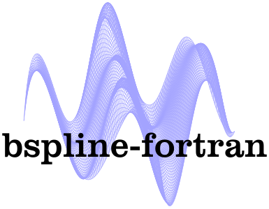

BSPLINE-FORTRAN -- Multidimensional B-Spline Interpolation of Data on a Regular Grid
Find us on…
bspline-fortran

Multidimensional B-Spline Interpolation of Data on a Regular Grid.
Status


Brief description
The library provides subroutines for 1D-6D interpolation and extrapolation using B-splines. The code is written in modern Fortran (i.e., Fortran 2003+). There are two ways to use the module, via a basic subroutine interface and an object-oriented interface. Both are thread safe.
Subroutine interface
The core routines for the subroutine interface are:
!f(x)
subroutine db1ink(x,nx,fcn,kx,iknot,tx,bcoef,iflag)
subroutine db1val(xval,idx,tx,nx,kx,bcoef,f,iflag,inbvx,w0,extrap)
!f(x,y)
subroutine db2ink(x,nx,y,ny,fcn,kx,ky,iknot,tx,ty,bcoef,iflag)
subroutine db2val(xval,yval,idx,idy,tx,ty,nx,ny,kx,ky,bcoef,f,iflag,inbvx,inbvy,iloy,w1,w0,extrap)
!f(x,y,z)
subroutine db3ink(x,nx,y,ny,z,nz,fcn,kx,ky,kz,iknot,tx,ty,tz,bcoef,iflag)
subroutine db3val(xval,yval,zval,idx,idy,idz,tx,ty,tz,nx,ny,nz,kx,ky,kz,bcoef,f,iflag,inbvx,inbvy,inbvz,iloy,iloz,w2,w1,w0,extrap)
!f(x,y,z,q)
subroutine db4ink(x,nx,y,ny,z,nz,q,nq,fcn,kx,ky,kz,kq,iknot,tx,ty,tz,tq,bcoef,iflag)
subroutine db4val(xval,yval,zval,qval,idx,idy,idz,idq,tx,ty,tz,tq,nx,ny,nz,nq,kx,ky,kz,kq,bcoef,f,iflag,inbvx,inbvy,inbvz,inbvq,iloy,iloz,iloq,w3,w2,w1,w0,extrap)
!f(x,y,z,q,r)
subroutine db5ink(x,nx,y,ny,z,nz,q,nq,r,nr,fcn,kx,ky,kz,kq,kr,iknot,tx,ty,tz,tq,tr,bcoef,iflag)
subroutine db5val(xval,yval,zval,qval,rval,idx,idy,idz,idq,idr,tx,ty,tz,tq,tr,nx,ny,nz,nq,nr,kx,ky,kz,kq,kr,bcoef,f,iflag,inbvx,inbvy,inbvz,inbvq,inbvr,iloy,iloz,iloq,ilor,w4,w3,w2,w1,w0,extrap)
!f(x,y,z,q,r,s)
subroutine db6ink(x,nx,y,ny,z,nz,q,nq,r,nr,s,ns,fcn,kx,ky,kz,kq,kr,ks,iknot,tx,ty,tz,tq,tr,ts,bcoef,iflag)
subroutine db6val(xval,yval,zval,qval,rval,sval,idx,idy,idz,idq,idr,ids,tx,ty,tz,tq,tr,ts,nx,ny,nz,nq,nr,ns,kx,ky,kz,kq,kr,ks,bcoef,f,iflag,inbvx,inbvy,inbvz,inbvq,inbvr,inbvs,iloy,iloz,iloq,ilor,ilos,w5,w4,w3,w2,w1,w0,extrap)
The ink routines compute the interpolant coefficients, and the val routines evalute the interpolant at the specified value of each coordinate. The 2D and 3D routines are extensively refactored versions of the original routines from the NIST Core Math Library. The others are new, and are simply extensions of the same algorithm into the other dimensions.
Object-oriented interface
In addition to the main subroutines, an object-oriented interface is also provided. For example, for the 3D case:
type(bspline_3d) :: s
call s%initialize(x,y,z,fcn,kx,ky,kz,iflag,extrap)
call s%evaluate(xval,yval,zval,idx,idy,idz,f,iflag)
call s%destroy()
Which uses the default "not-a-knot" end conditions. You can also specify the knot vectors (in this case, tx, ty, and tz) manually during class initialization:
call s%initialize(x,y,z,fcn,kx,ky,kz,tx,ty,tz,iflag,extrap)
The various bspline classes can also be initialized using constructors, which have similar interfaces as the initialize methods. For example:
type(bspline_3d) :: s
s = bspline_3d(x,y,z,fcn,kx,ky,kz,iflag,extrap)
Spline order
The various k inputs (i.e., kx, ky, etc.) specify the spline order for each dimension. The order is the polynomial degree + 1. For example:
k=2: Lineark=3: Quadratick=4: Cubic- etc.
Extrapolation
The library optionally supports extrapolation for points outside the range of the coefficients. This is disabled by default (in which case an error code is returned for points outside the bounds). To enable extrapolation, use the optional extrap input to the various db*val subroutines or the initialize methods from the object-oriented interface.
Integration
The library also contains routines for computing definite integrals of bsplines. There are two methods (currently only for 1D):
- Basic version:
db1sqad(integralin the object-oriented interface) -- Computes the integral on(x1,x2)of a b-spline by applying a 2, 6, or 10 point Gauss formula on subintervals of(x1,x2). This is only valid for orders <= 20. - More general version:
db1fqad(fintegralin the object-oriented interface) -- Computes the integral on(x1,x2)of a product of a user-defined functionfun(x)and the ith derivative of a b-spline with an adaptive 8-point Legendre-Gauss algorithm.
Note that extrapolation is not currently supported for these.
Least squares fitting
The BSpline-Fortran library also exports the defc subroutine, which can be used to fit B-spline polynomials to 1D data using a weighted least squares method. The dfc subroutine also allows for equality and inequality constraints to be imposed on the fitted curve. These procedures are not yet available in the object oriented interface.
Examples
See the examples for more details. Note that, to compile and run some of the test programs, the pyplot-fortran library (which is used to generate plots) is required. This will automatically be downloaded by FPM.
Compiling
The library can be compiled with recent versions the Intel Fortran Compiler and GFortran (and presumably any other Fortran compiler that supports modern standards).
FPM
A fpm.toml file is provided for compiling bspline-fortran with the Fortran Package Manager. For example, to build:
fpm build --profile release
By default, the library is built with double precision (real64) real values and single precision (int32) integer values. Explicitly specifying the real or integer kinds can be done using the following processor flags:
| Preprocessor flag | Kind | Number of bytes |
|---|---|---|
REAL32 |
real(kind=real32) |
4 |
REAL64 |
real(kind=real64) |
8 |
REAL128 |
real(kind=real128) |
16 |
| Preprocessor flag | Kind | Number of bytes |
|---|---|---|
INT8 |
integer(kind=int8) |
1 |
INT16 |
integer(kind=int16) |
2 |
INT32 |
integer(kind=int32) |
4 |
INT64 |
integer(kind=int64) |
8 |
For example, to build a single precision version of the library, use:
fpm build --profile release --flag "-DREAL32"
To run the unit tests:
fpm test --profile release
To use bspline-fortran within your fpm project, add the following to your fpm.toml file:
[dependencies]
bspline-fortran = { git="https://github.com/jacobwilliams/bspline-fortran.git" }
or, to use a specific version:
[dependencies]
bspline-fortran = { git="https://github.com/jacobwilliams/bspline-fortran.git", tag = "7.3.0" }
CMake
A basic CMake configuration file is also included. For example, to build a static library:
cmake -S. -Bbuild
cmake --build build
Or, to build a shared library, replace the first CMake command with:
cmake -S. -Bbuild -DBUILD_SHARED_LIBS=ON ..
For a debug build:
cmake -S. -Bbuild -DCMAKE_BUILD_TYPE=DEBUG ..
Dependencies
The library requires some BLAS routines, which are included. However, the user may also choose to link to an external BLAS library. This can be done by using the HAS_BLAS compiler directive. For example:
fpm build --compiler gfortran --flag "-DHAS_BLAS -lblas"
However, note that an external BLAS can only be used if the library is compiled with double precision (real64) reals.
Documentation
The latest API documentation can be found here. This was generated from the source code using FORD (i.e. by running ford ford.md).
License
The bspline-fortran source code and related files and documentation are distributed under a permissive free software license (BSD-style).
Keywords
- Bspline, spline, interpolation, data fitting, multivariate interpolation, multidimensional interpolation, integration
See also
- This library includes the public domain DBSPLIN and DTENSBS code from the NIST Core Math Library (CMLIB).
- SPLPAK Multidimensional least-squares cubic spline fitting
- FINTERP Multidimensional Linear Interpolation with Modern Fortran
- PCHIP Piecewise Cubic Hermite Interpolation.
- Regridpack Linear or cubic interpolation for 1D-4D grids.